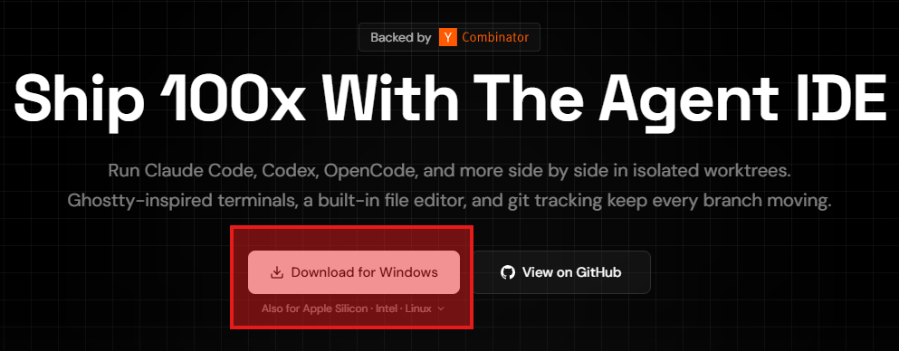
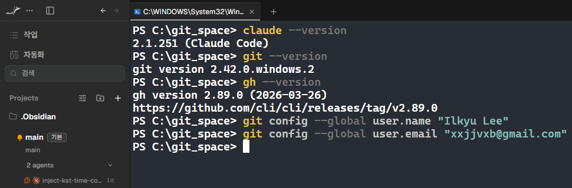

0부터 Claude Code 셋업
Orca 설치 → Git·GitHub CLI 설치 → Claude Code 설치(PowerShell 한 줄)Orca 설치 → Git·GitHub CLI 설치 → Claude Code 설치(터미널 한 줄) → 교육 팀 계정 초대 → 첫 실행. Node.js까지 깔면 배포 준비 끝.
Mac이세요? 우상단 🪟 Win ⇄ 🍎 Mac 토글 클릭 — 명령어·경로·단축키가 즉시 Mac으로 바뀝니다.
셋업 흐름, 한눈에
Orca 설치
onorca.dev에서 다운로드 — AI 에이전트 전용 작업실
환경변수 · PATH
왜 PowerShell터미널 새로 열어야 하나
Git·gh 설치 + 신원
claude가 둘 다 자주 호출 — 먼저 깔아둠
Claude Code 설치
irm https://claude.ai/install.ps1 | iexcurl -fsSL https://claude.ai/install.sh | bash
PATH 확인
claude --version 통과
강의 계정
팀 초대 또는 본인 가입
claude → "안녕"
첫 응답 확인
Orca에서 실행
내장 터미널에서 claude
Node.js는 2장 홈페이지 배포까지 가려면 필수 — 뒤 슬라이드에서 함께 설치. 트러블슈팅 5가지는 막혔을 때만.
Orca · onorca.dev에서 설치
- 브라우저로 onorca.dev 접속
- Windows용 Download 버튼 클릭 → 설치 파일 다운로드Download for Mac 클릭 (Apple Silicon / Intel 맞는 것)
- 받은 설치 파일 실행 → 안내 따라 설치 (1~2분)받은 파일 열기 → 응용 프로그램 폴더로 드래그
- 완료 후 시작 메뉴에서 "Orca" 실행첫 실행 시 Gatekeeper 경고 → "열기" (1회 승인)

무료·오픈소스라 결제·회원가입 없이 바로 씁니다. 설치가 끝나면 다음 슬라이드에서 Orca가 어떤 도구인지 30초 소개.
Orca — AI 에이전트 전용 작업실
에이전트를 위한 설계
일반 편집기가 아니라 — Claude Code 같은 AI 에이전트를 돌리기 위해 만들어진 작업 공간(ADE)입니다.
한 화면에 전부
파일 편집 + 터미널 + 브라우저 미리보기가 한 창에 — 만든 페이지를 그 자리에서 바로 봅니다.
무료 · 오픈소스
완전 무료(MIT). 나중엔 에이전트 여러 개를 나란히 돌리는 것도 — 9장쯤에 탐나게 됩니다.
실행이 안 되면 — 완전히 종료 후 다시 실행, 그래도 안 되면 onorca.dev에서 재설치 → 오른쪽 질문 버튼에 올려주세요.
환경변수 — 시스템이 공유하는 설정값
PATH가 뭔가
"명령어를 어디서 찾을지" 폴더 목록을 적어둔 환경변수.
- PowerShell셸(zsh)이
claude를 PATH 폴더들에서 검색 - 설치 스크립트가 PATH에 자동 추가
- 새로 등록된 PATH는 새 PowerShell터미널 창에서만 적용
"인식되지 않습니다command not found"는 99% PATH 문제. 새 PowerShell터미널 창이 1차 해결책.
먼저 — git + gh 설치하고 신원 등록
git-scm.com에서 받기
git-scm.com/download/win ↗노란색 "Git for Windows/x64 Setup" 클릭 → 받은 파일 실행 → 옵션은 전부 기본값으로 Install. 이어서 GitHub CLI(gh)도 — 새 PowerShell에서 한 줄:
winget이 없다는 메시지가 뜨면 — cli.github.com에서 설치 파일을 받아 실행합니다.
Mac은 이미 깔려 있을 가능성 높음
터미널에서 git --version을 먼저 쳐 보세요.
- 버전이 나오면 설치 끝 — 신원 등록만 하면 됨
- "command not found"가 뜨면 Xcode Command Line Tools가 떠요 →
xcode-select --install후 동의 + 설치 (5~10분) - 또는 Homebrew 사용자는
brew install git한 줄 - GitHub CLI(gh)는
brew install gh— Homebrew가 없으면cli.github.com에서 다운로드
왜 Claude보다 먼저? claude가 작업 도중 git과 gh(GitHub 명령 도구)를 자동으로 호출합니다 — 없으면 흐름이 끊겨요. git config 두 줄은 평생 한 번만. gh 로그인은 지금 안 해도 됩니다 — 2장에서 GitHub 계정을 만들 때 함께 합니다.
설치 방법 3가지 — 본인 환경에 맞게
irm https://claude.ai/install.ps1 | iex
irm 다운로드 · iex 실행 — Node.js 없이 한 줄.npm update로 업데이트도 한 줄.curl -fsSL https://claude.ai/install.sh | bash
brew upgrade 한 줄로.npm update로 업데이트도 한 줄.설치 직후 PowerShell터미널을 껐다 새로 열어야 PATH 갱신 → claude 인식. 실패 시 → 관리자 권한 PowerShell.실패 시 → sudo 또는 권한 확인.
claude 명령어가 잡혔는지 확인

강의 계정 — 팀으로 초대받습니다
본인 결제 X — 교육 팀 계정으로 초대
이 과정에서는 교육 팀 계정으로 초대해 진행합니다. 등록하신 메일 주소로 초대장이 발송되니, 메일 주소 등록이 안 되신 분은 강사에게 말씀해 주세요. Anthropic 계정 가입·결제는 따로 필요 없습니다.
강의 이후 본인 계정으로 쓰려면 → Claude Pro 구독이 가장 간단(카드 등록 한 번). 헤비 사용자는 API 종량제. 자세한 비교는 과정 후반에 다룹니다.
claude로 "안녕하세요"
쉬운 방법 · 마우스 우클릭
- 바탕화면 빈 공간 우클릭 → 새로 만들기 → 폴더
- 폴더 이름
my-intro입력 - my-intro 폴더 안 빈 공간 우클릭 → "터미널에서 열기"
- 열린 PowerShell에
claude입력 - 처음이면 브라우저 로그인 창 → 교육 팀 계정 메일로 로그인
쉬운 방법 · Finder에서
- Finder → 데스크탑에서 빈 공간 우클릭 → 새로운 폴더
- 폴더 이름
my-intro입력 - my-intro 폴더를 우클릭 → "폴더에 있는 새로운 터미널" (서비스 메뉴)
- 열린 터미널에
claude입력 - 처음이면 브라우저 로그인 창 → 교육 팀 계정 메일로 로그인
Windows 10이라면 Shift + 우클릭 → "여기에서 PowerShell 창 열기". 또는 cd C:\Users\본인계정\Desktop\my-intro.
우클릭 메뉴에 "폴더에 있는 새로운 터미널"이 없으면 시스템 환경설정 → 키보드 → 단축키 → 서비스에서 활성화. 또는 cd ~/Desktop/my-intro.
처음 claude 실행 → 브라우저 로그인 한 번


브라우저가 안 열리면 터미널에 표시되는 URL을 직접 복사해 붙여넣으세요. 로그인은 최초 1회만 — 이후엔 claude 입력만으로 바로 시작됩니다.
Orca 안에서 claude 실행
3가지만 하면 끝
- Orca 실행 → my-intro 폴더 열기
- 내장 터미널 열기 (PowerShellzsh)
- 거기서 claude 입력
과정 내내 이 환경에서 작업합니다 — 편집기 + 터미널 + AI + 브라우저 미리보기가 한 화면.
Node.js — 지금 설치해 둡니다
- nodejs.org 접속 → "LTS" 큰 버튼 클릭 (Windows .msi 자동 다운로드)
node-v22.x.x-x64.msi(LTS 버전 숫자는 다를 수 있음) 더블클릭 → 보안 경고 "예" → 설치 마법사 Next 따라 진행- Custom Setup에서 "Add to PATH" 체크 확인 → Install → UAC 승인 → 1~2분 대기
- 완료 후 새 PowerShell에서
node --version→v22.x.x처럼 버전 숫자가 나오면 OK
- Homebrew가 설치돼 있으면
brew install node한 줄 — 30초~1분 - Brew가 없으면 nodejs.org → "LTS" 버튼 →
.pkg다운로드 → 더블클릭 → 설치 마법사 - 설치 후 새 터미널에서
node --version→v22.x.x처럼 버전 숫자가 나오면 OK - Homebrew 자체 설치는
/bin/bash -c "$(curl -fsSL https://raw.githubusercontent.com/Homebrew/install/HEAD/install.sh)"
왜 필요? 홈페이지를 만들고 배포할 때 쓰는 웹 도구들(로컬 미리보기 서버·배포 도구)이 Node.js 위에서 돌아갑니다 — 2장 배포까지 가려면 필수.
막혔을 때 먼저 시도할 것들
Set-ExecutionPolicy -Scope CurrentUser RemoteSigned → 재시도.chmod +x ~/.claude/bin/claude. Mac은 별도 정책 없음 — 권한만 맞으면 OK.먼저 끝난 분들 —
AI로 코딩할 준비 완료!
8단계를 다 통과했다면 이제는 AI로 코딩을 할 준비가 되었습니다. 아직 막힌 단계가 있어도 괜찮습니다 — 전원 준비되면 본격적으로 AI를 다룹니다.